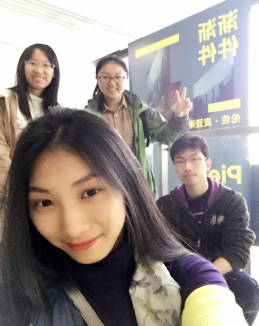

历经沧桑的桥梁、狭窄的街巷、历史悠久的砖瓦是岁月雕琢的痕迹，是历史沉淀而成的色调，低诉着在这座古镇的历史——甪直(lu zhi)。
古话云：“到了甪直勿看桥，等于甪直未曾到！”换成大白话就是说，你到了甪直没看桥如同经历了一场假旅行。平桥拱桥，长桥短桥，参差起伏，将香温水软的河面砌出了重重波澜。花与彼岸，从今生走向前世的香花桥；仕进顺利、载源取财的进利桥；桥度人、桥下度心的东美桥；三步跨两桥的万安桥和三元桥……这些古桥各具特色，千姿百态，古朴典雅。 相比较乌镇、周庄，这里仍保留着大量的原住民。阳光很好的午后，廊棚下、青石板路旁，他们三五成群有一搭没一搭地聊着天，流露出一种怡然自得的调调。
甪直人的生活里，总会有这么一个定格，一位老奶奶挑着竹篮，慢悠悠的踩着台阶上桥。背影亲切而温暖，配上小桥的年代感，说不出的感动。有甪直人说：这就是故乡的烙印
苏州博物馆是“现代建筑最后的大师”贝聿铭先生在中国大陆的三件建筑作品之一。
博物馆以灰和白两色为主，色调上与传统民族建筑保持一致，造型上加上了很多贝聿铭最擅长的几何图形，显得既时尚又传统。玻璃与钢材也是贝氏风格的代表，苏州博物馆采光自然，大片的玻璃蒙上类似苏绣的布料，朦胧中体现出东方含蓄的美。这一设计吸取苏州古典园林之精华，使现代建筑风格与中国传统美感相结合，意境悠远、淡雅精致，博物馆本身已然成为一件精美的建筑艺术品，堪称中国最美的博物馆建筑。
建筑展分为5个板块，以建筑模型、原版设计手稿、展板、影像等形式直观展现伦佐•皮亚诺从业至今的代表名作。本次展览从材料、结构、氛围和使用者的关系等方面进行探讨，向我们展示了这位从米兰现代主义出发，超越传统的建筑大师，无限接近诗的精准和自由的不懈历程。每一件模型、手稿、展板都像是一片拼图，拼凑出了伦佐·皮亚诺在建筑设计上的成长与蜕变。